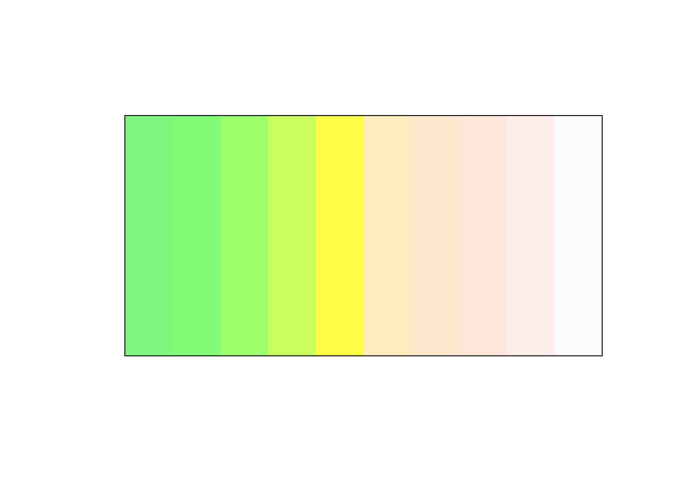

The goal of prismatic is to provide color manipulation tools in R, in an intuitive, low-dependency and functional way.
-
intuitive All the working functions are prefixed with
clr_(color) allowing for easy autocompletion. - low-dependency Only depends on farver.
- functional All functions have consistent inputs and outputs and are thus fully pipeable.
Installation
You can install the released version of prismatic from CRAN with:
install.packages("prismatic")And the development version from GitHub with:
# install.packages("devtools")
devtools::install_github("EmilHvitfeldt/prismatic")Examples
All prismatic function return a colors object, which includes a new printing method and plotting method for quickly visualizing the colors.
library(prismatic)
terrain10 <- terrain.colors(10)
terrain10
#> [1] "#00A600" "#2DB600" "#63C600" "#A0D600" "#E6E600" "#E8C32E" "#EBB25E"
#> [8] "#EDB48E" "#F0C9C0" "#F2F2F2"
terrain_color <- color(terrain10)
terrain_color
#> <colors>
#> #00A600FF #2DB600FF #63C600FF #A0D600FF #E6E600FF #E8C32EFF #EBB25EFF #EDB48EFF #F0C9C0FF #F2F2F2FF
plot(terrain_color)
If cli is available the print method will do its best to represent the colors.

ddd <- color(terrain.colors(10))
ddd
#> <colors>
#> #00A600FF #2DB600FF #63C600FF #A0D600FF #E6E600FF #E8C32EFF #EBB25EFF #EDB48EFF #F0C9C0FF #F2F2F2FF
plot(ddd)
clr_grayscale(ddd) |> plot()
clr_lighten(ddd, 0.7) |> plot()
clr_darken(ddd, 0.5) |> plot()
clr_saturate(ddd, 0.5) |> plot()
clr_desaturate(ddd, 0.5) |> plot()
clr_negate(ddd) |> plot()
clr_rotate(ddd, 180) |> plot()
clr_protan(ddd) |> plot()
clr_tritan(ddd) |> plot()
clr_deutan(ddd) |> plot()
Related work
This package is hugely inspired by the JavaScript library Qix-/color.
Code of Conduct
Please note that the prismatic project is released with a Contributor Code of Conduct. By contributing to this project, you agree to abide by its terms.